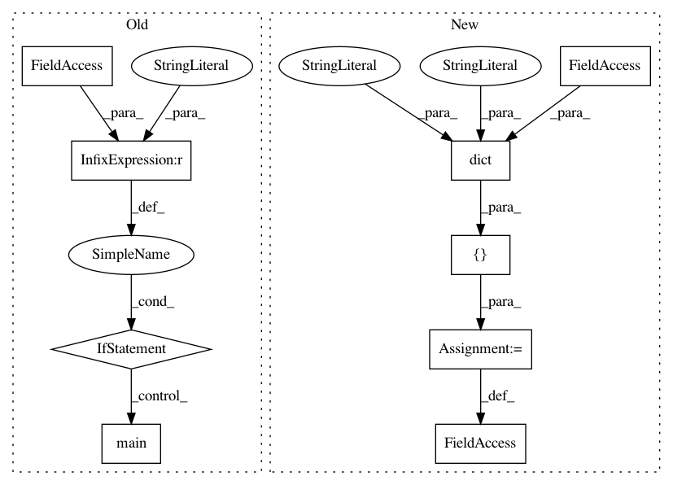

1cb73ac3f9b6915232945b7b40358c29a53c5a07,tensorflow_transform/saved/saved_transform_io_v2_test.py,,,#,344
Before Change
export_path = new_export_path
if __name__ == "__main__":
test_case.main()
After Change
return preprocessing_fn
_RE_EXPORT_TF2_TO_TF1_TEST_CASES = [
dict(
testcase_name="_asset_table",
preprocessing_fn_getter=_get_preprocessing_fn_asset_table,
expected_output=2,
test_input="baz",
asset_file_contents="foo\nbar\nbaz\n"),
dict(
testcase_name="_non_asset_table",
preprocessing_fn_getter=_get_preprocessing_fn_non_asset_table,
expected_output=2,
test_input="baz"),
]
// TODO(b/123241798): Find an open-source compatible way to access
// FLAGS.test_tmpdir.
In pattern: SUPERPATTERN
Frequency: 3
Non-data size: 9
Instances
Project Name: tensorflow/transform
Commit Name: 1cb73ac3f9b6915232945b7b40358c29a53c5a07
Time: 2020-12-12
Author: varshaan@google.com
File Name: tensorflow_transform/saved/saved_transform_io_v2_test.py
Class Name:
Method Name:
Project Name: tensorflow/transform
Commit Name: ef40bb29abc23d08c8adcc7496d5aee3e42f3e29
Time: 2019-06-20
Author: zoy@google.com
File Name: tensorflow_transform/beam/analysis_graph_builder_test.py
Class Name:
Method Name:
Project Name: tensorflow/transform
Commit Name: a41043126e966b8188f167fa471d68e4daee52ec
Time: 2019-08-06
Author: zoy@google.com
File Name: tensorflow_transform/beam/cached_impl_test.py
Class Name:
Method Name: